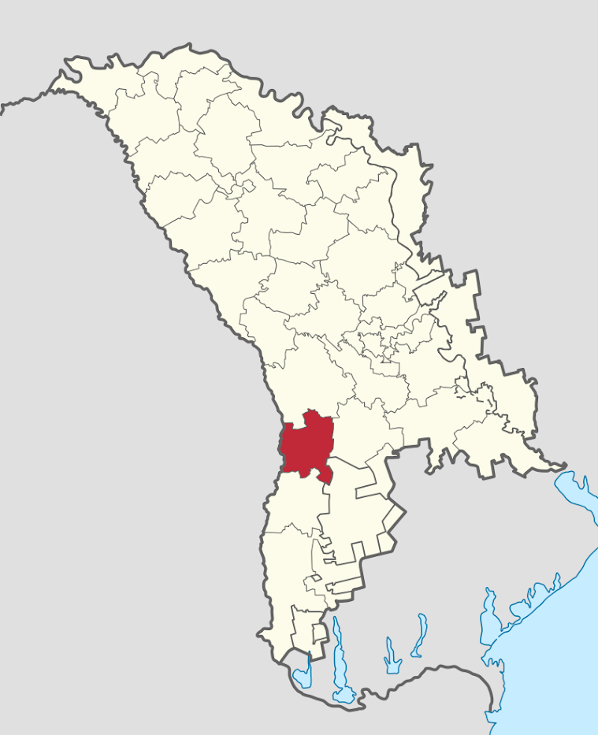

Sărățica Nouă
Satul Sărăţica Nouă este o localitate in Raionul Leova situata la latitudinea 46.5724 longitudinea 28.5483 si altitudinea de 79 metri fata de nivelul marii. Aceasta localitate este in administrarea or. Leova. Conform recensamintului din anul 2004 populatia este de 760 locuitori. Distanța directă pîna în or. Leova este de 34 km. Distanța directă pîna în or. Chişinău este de 55 km. Comuna Sărățica Nouă este o comună din raionul Leova, Republica Moldova. Este formată din satele Sărățica Nouă (sat-reședință) și Cîmpul Drept. Satul are o suprafaţă de circa 1.11 kilometri pătraţi, cu un perimetru de 6.34 km. Din componenţa comunei fac parte localităţile Sărăţica Nouă și Cîmpul Drept. Localitatea se află la distanța de 30 km de orașul Leova și la 82 km de Chișinău. Satul Sărățica Nouă a fost menționat documentar în anul 1815.